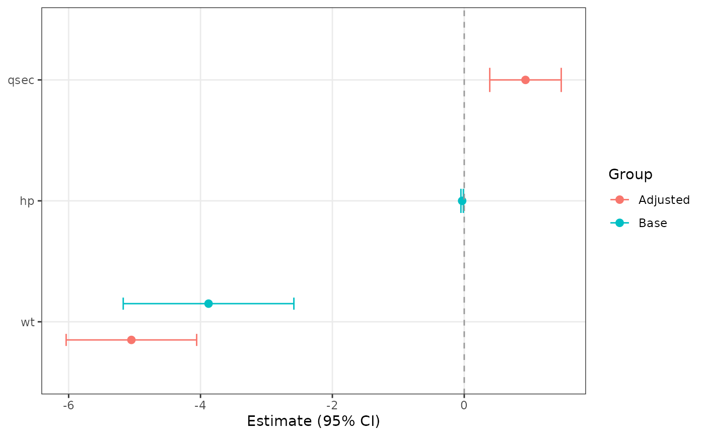

Bind multiple model summaries for a grouped forest plot
Source:R/bind_forest_models.R
bind_forest_models.RdTidies multiple fitted models and stacks their fixed-effect coefficient
tables into a single forest-plot data frame. The resulting data can be
passed directly to ggforestplot(), where model labels are used as the
grouping variable for dodged, color-coded estimates.
Arguments
- models
A non-empty list of fitted model objects supported by
tidy_forest_model().- model_labels
Optional labels used to identify each model in the forest plot. Defaults to list names when present, otherwise
"Model 1","Model 2", and so on.- exponentiate
NULL, a single logical value, or one logical value per model.NULLuses the canonical scale inferred bytidy_forest_model()for each model.- ...
Additional arguments passed to
tidy_forest_model(), such asconf.level,intercept,term_labels, orsort_terms.
Value
A standardized forest-plot data frame with one row per model term
and a group column containing the model labels.
Examples
if (requireNamespace("broom", quietly = TRUE)) {
fit1 <- lm(mpg ~ wt + hp, data = mtcars)
fit2 <- lm(mpg ~ wt + qsec, data = mtcars)
bound <- bind_forest_models(
list(Base = fit1, Adjusted = fit2)
)
ggforestplot(bound)
}
